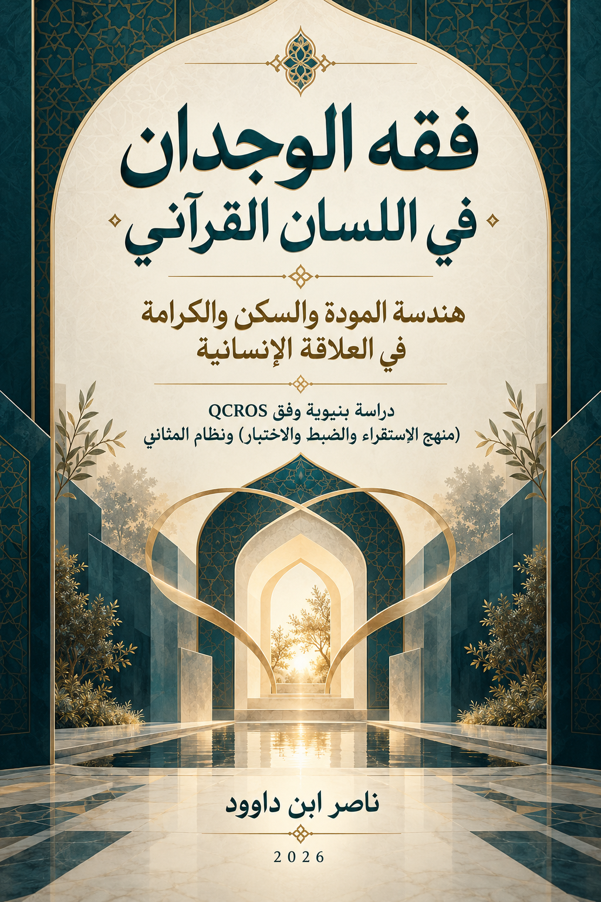

114. فقه الوجدان في اللسان القرآني

هندسة المودة والسكن والكرامة في العلاقة الإنسانية؛ دراسة بنيوية وفق QCROS ونظام المثاني، تعرض نموذج الكرامة الوجدانية بوصفه مرشحًا قابلًا للاختبار لا قانونًا قرآنيًا نهائيًا.
قراءة PDF داخل الموقع / Read the PDF on this website
جارٍ تجهيز القارئ… / Preparing the reader…
ملخص الكتاب وفهرسه الموضوعي (مقتطف نصي للفهرسة والبحث)
فقه الوجدان في اللسان القرآني
هندسة المودة والسكن والكرامة في العلاقة الإنسانية
دراسة بنيوية وفق QCROS (منهج الاستقراء والضبط والاختبار) ونظام المثاني
ناصر ابن داوود
2026
1 ملخص الكتاب ودليل القارئ
1.1 ملخص الكتاب
ينطلق هذا الكتاب من سؤال يبدو وجدانيًا، لكنه يتحول سريعًا إلى سؤال لغوي وبنيوي وأخلاقي وحضاري: كيف يعرض القرآن الإنسان داخل العلاقة؟ ولا يفترض البحث أن «الوجدان» مصطلح قرآني تقني مكتمل، بل يستعمله وعاءً تحليليًا لاختبار شبكة من الألفاظ والحالات والعلاقات: الحب والمودة والسكن والرحمة، والخوف والحزن والكراهة والرضا، والقول والإرادة والتراضي، والميثاق والميزان والقسط والعدل، والحماية والإثبات والكرامة.
يتحرك الكتاب عبر ستة أبواب مترابطة. يبدأ بتأسيس المدونة الوجدانية وتحرير المصطلحات؛ ثم ينتقل إلى الفاعل الوجداني وصوت المرأة وإرادتها والرضا والميثاق؛ ثم يختبر الميزان والبخس والتطفيف والقسط والعدل داخل العلاقة؛ وبعد ذلك يدرس الحدود والانحراف والحماية وأخلاق المعلومات وصيانة الكرامة؛ ثم يعيد بناء موقع المرأة بوصفها فاعلًا كامل الإنسانية لا مجرد موضوع للحماية؛ وأخيرًا ينقل ما ثبت — بحدوده — إلى نماذج تشغيلية وحضارية قابلة للاختبار والمراجعة.
الحصيلة المركزية للكتاب ليست تعريفًا نهائيًا للوجدان ولا قانونًا كليًا مغلقًا، بل خريطة علاقات تحفظ الفروق بين الشعور والسلوك، وبين الفعل والاتهام والإثبات، وبين الحماية والمصادرة، وبين القيمة والوظيفة، وبين النص والنموذج التشغيلي. وقد وصل نموذج «الكرامة الوجدانية» إلى رتبة مرشح قوي (CANDIDATE STRONG)، لا إلى رتبة قانون قرآني نهائي مختوم. لذلك فإن قوة الكتاب لا تقاس بعدد القوانين المعلنة، بل بقدرة القارئ على تتبع الدليل وحدود الدعوى وما بقي مفتوحًا.
1.2 كيف يقرأ القارئ هذا الكتاب؟
1.2.1 دليل مختصر للمنهج والاختبار
هذا الكتاب ليس كتابًا يُقرأ فقط لاستخراج «النتيجة النهائية». فقد بُني بحيث يستطيع القارئ أن يتتبع كيف نشأت النتيجة، وما الدليل عليها، وما حدودها، وما الذي قد ينقضها أو يضيّقها. ويُقترح أن يُقرأ كل فصل وفق المسار الآتي: اقرأ (READ) ← اجمع (COLLECT) ← قارن (COMPARE) ← افترض (HYPOTHESIZE) ← اختبر (TEST) ← احكم (JUDGE) ← واصل البحث (CONTINUE).
1.2.2 ابدأ بالنص لا بالنتيجة
حين تجد في الفصل قانونًا مرشحًا أو علاقة أو نموذجًا، لا تبدأ بسؤال: هل أوافق عليه؟ ابدأ بسؤال: ما المورد النصي الذي أُخذ منه؟ ميّز دائمًا بين الدليل (Evidence)، والملاحظة (Observation)، والتفسير (Interpretation)، والفرضية (Hypothesis)، والنتيجة (Result)، والنموذج (Model). والقاعدة: الدليل ← التسجيل ← النموذج (Evidence (الدليل) → Record (السجل) → Model (نموذج))، وليس النموذج ← اختيار الدليل الذي يناسبه.
1.2.3 لا تجعل وجود عنصرين دليلًا على علاقة
إذا ظهر A وB في النص نفسه، فالسؤال الأول ليس: ما علاقة A بـB؟ بل: هل أثبت النص أصلًا وجود علاقة بينهما؟ فالتجاور/الاقتران (Co-occurrence) لا يساوي السببية (Causality). وقد يكون وجودهما اقترانًا، أو تقابلًا، أو شرطًا، أو غاية، أو فرعًا بديلًا، أو علاقة أخرى.
1.2.4 اسأل دائمًا: ما نوع العلاقة؟
إذا ثبت وجود علاقة، فحدّد نوع العلاقة (Relation Type)، ولا تحوّل كل سهم إلى سبب. فالصيغة A → B لا تعني تلقائيًا أن A يسبب B؛ قد تمثل ترتيب قراءة، أو شرطًا، أو تحولًا، أو انتقالًا تمثيليًا، أو ترتيبًا نصيًا. لذلك يجب الرجوع إلى تعريف العلاقة داخل الفصل.
1.2.5 افصل النوع عن المعدِّلات
قد تثبت العلاقة، لكن بعض خصائصها تبقى محلية. لذلك نوع العلاقة (Relation Type) لا يساوي المعدِّل (Modifier). فإذا ثبت نوع العلاقة في موردين، لا يعني ذلك أن الزمن أو الشدة أو الاتجاه أو الوساطة تنتقل تلقائيًا بينهما.
1.2.6 انتبه إلى النطاق
اسأل دائمًا: أين ثبتت النتيجة؟ في مورد واحد؟ في مجموعة موارد؟ في جذر؟ في شبكة علائقية بعينها؟ في باب المرأة والكرامة؟ أم في المدونة العامة للوجدان؟ لا تنتقل من محلي (Local) إلى كلي (Universal) بلا اختبار. القاعدة: البنية المشتركة لا تساوي النطاق نفسه (Shared Structure (البنية المشتركة) ≠ Same Scope (النطاق نفسه)).
1.2.7 الضرورة لا تعني الكفاية
إذا أثبت النص أن شرطًا ما لازم لوقوع نتيجة، فلا تستنتج أن وجوده وحده كافٍ لوقوعها. الحد الضروري (Necessary Boundary) لا يساوي السبب الكافي (Sufficient Cause). وهذا مهم في قراءة الرضا، والعضل، والحماية، والصلح، والتفرق، وغيرها من موارد العلاقة.
1.2.8 التتابع ليس مراحل بالضرورة
قد نجد A ثم B ثم C، لكن لا نستنتج تلقائيًا مرحلة 1 ثم مرحلة 2 ثم مرحلة 3 على مستوى كل البنية. اسأل: هل الترتيب نصي أم زمني؟ هل يظهر B من دون A في مورد آخر؟ وهل العلاقة محلية أم عامة؟ القاعدة: الترتيب النصي (Textual Order) لا يساوي الترتيب المرحلي الكلي (Universal Stage Order).
1.2.9 لا تنقل النتيجة لمجرد أنها سابقة
إذا استُدعي كتاب أو مجلد سابق، فاسأل: هل استُدعيت أداة منهجية أم نتيجة علمية؟ القاعدة: المجلد السابق لا يساوي دليلًا للمدونة الجديدة (Previous Volume (المجلد السابق) ≠ Evidence for New Corpus (دليل المدونة الجديدة))، وإعادة استعمال الأداة لا تساوي إعادة استعمال النتيجة (Core Reuse (إعادة استعمال الأداة) ≠ Result Reuse (إعادة استعمال النتيجة)).
1.2.10 اختبر قابلية النقل بُعدًا بعدًا
حين يُقال إن علاقة ما قابلة للنقل، لا تفهم ذلك بوصفه إذنًا مفتوحًا. افحص نقل نوع العلاقة (P-TYPE)، ونقل المعدِّلات (P-MOD)، ونقل النطاق (P-SCOPE)، ونقل الاتجاه (P-DIR)، ونقل الشرط (P-COND)، والنقل بين الطبقات (P-LAYER)، وحالة المصدر (P-SOURCE). والنجاح في بُعد واحد لا يمنح النجاح للأبعاد كلها.
1.2.11 لا تخلط الطبقات
يفصل هذا الكتاب بين العلاقة (Relation)، والمسؤولية (Responsibility)، والأثر (Effect)، والانكشاف/التغطية (Exposure/Covering)، والمآل (Outcome)، والتاريخ السردي (Narrative History). فإذا تغير المآل فلا تستنتج أن التاريخ مُحي، وإذا زال أثر فلا تستنتج أن المسؤولية زالت. النقل بين الطبقات غير مفترض (Layer Transfer (النقل بين الطبقات) = NOT PRESUMED (غير مفترض)).
1.2.12 اقرأ الموارد المقاومة قبل قبول النموذج
في كل فرضية مهمة اسأل: ما المورد الذي يقاومها؟ فإذا صمد الادعاء أمامه ازداد ضبطه؛ وإذا لم يصمد فقد يضيق نطاقه، أو يتغير تمثيله، أو يفشل النموذج، أو يفشل التعميم فقط.
1.2.13 فرّق بين أنواع الفشل
إذا فشل شيء، فاسأل: ما الذي فشل؟ فشل العلاقة المحلية (F-L: Local Relation Failure (فشل العلاقة المحلية))، أم فشل النموذج (F-M: Model Failure (فشل النموذج))، أم فشل التعميم (F-U: Universalization Failure (فشل التعميم))؟ قد يفشل النموذج الجامع بينما تبقى علاقات جزئية صحيحة.